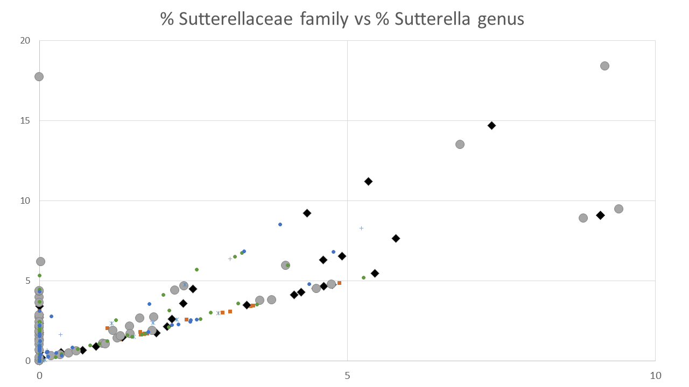
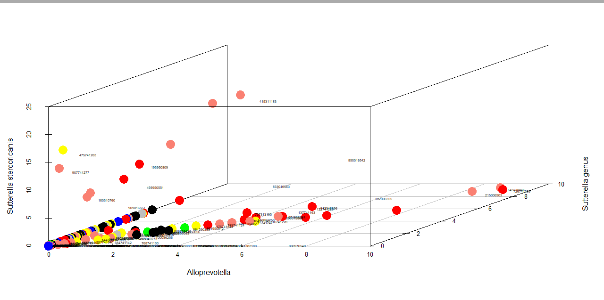

In our previous blog we talked about Anna Karenina Principle:
deficiency of overabundance in any one of vital bacterial types could be enough to exhibit offensive odors.
Sutterella group is the largest cohort of MEBO sufferers identified in our study. Sutterella stercoricanis was found in about 30% of our participants and in about 50% of those with worst symptoms. It was not found in any of
MEBO remission cases nor in our controls and relatives of study participants with no symptoms.
Sutterella is a gram-negative rod-shaped bacteria common in the gastrointestinal tract of dogs, especially dogs with diarrhea. It might displace beneficial bacteria in children with autism and adults with food sensitivities. These bacteria are mildly pro-inflammatory, but in small amounts it may be somewhat helpful, trying to help keep immune system responses at an appropriate level. Sutterella stercoricanis species, most significant in active MEBO condition, was isolated from feces of a healthy labrador dog.
Sutterella was recently associated with foot odor, possibly responsible for producing volatile compound RI 1489, also associated with odors of axilla (the armpit) and forearm.
Sutterella belongs to the family of the Sutterellaceae, Betaproteobacteria associated with Western diet.
In the figure on the right, blue circles depict our control population (randomly picked from non-MEBO population or relatives of our study participants with no symptoms reported) and those in remission; green circles show those who rarely experienced symptoms, yellow circles are those who experienced odors sometime during the day before collection of the sample. Salmon (light red) circles show MEBO population who experienced symptoms most of the time while red circles are those who had symptoms all the time.
 Next figure also shows those who could not smell themselves (black) and
those who did not submit QoL questionnaire (gray).
As you see, they represent relatively milder cases but still significantly differ from controls in Alloprevotella and other
species.
Sutterella genus (z axis) does not correlate with odors
unless it is present in very large amounts.
(Some labels are clumped together or shifted as the figures were generated in R and not edited)
More later.
REFERENCES Omar NY, Ahmed SM, Azouz H, Abdelhamid SM, Abdelaziz NM. Detection of Sutterella in the Stool of Egyptian Children with Autism Spectrum Disorders. Microbiology Research Journal International. 2017 Nov 28:1-8. Devaux CA, Raoult D. The microbiological memory, an epigenetic regulator governing the balance between good health and metabolic disorders. Frontiers in microbiology. 2018 Jun 26;9:1379. Due, C; (2018) An investigation into the role of the skin odorants and microbiota in the attraction
of malaria mosquitoes to human beings. PhD thesis, London School of Hygiene & Tropical Medicine.
DOI: https://doi.org/10.17037/PUBS.04649896
{kind=link}
{kind=link}